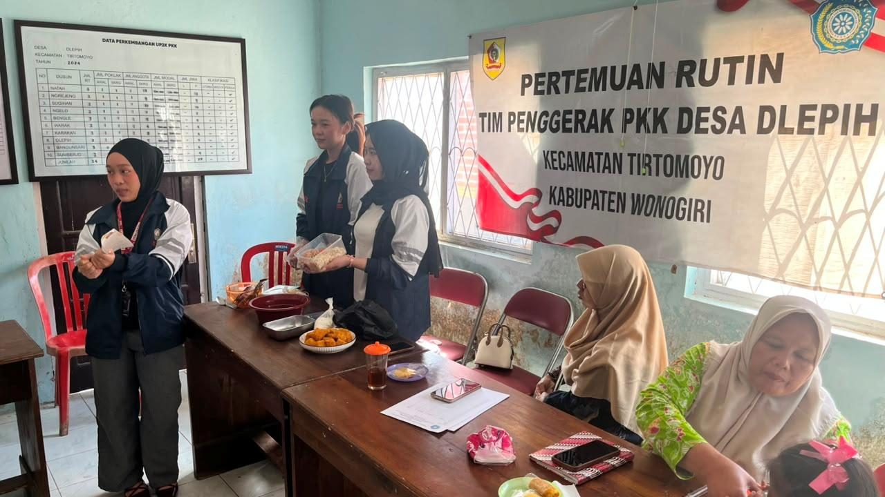

Inovasi PanganNugget Ampas Tahu
Nugget ampas tahu merupakan inovasi olahan pangan yang memanfaatkan ampas tahu sebagai bahan baku bernilai tambah. Meskipun sering dianggap sebagai limbah, ampas tahu masih mengandung protein, serat, dan zat gizi lainnya. Melalui proses pengolahan yang tepat dengan tambahan bahan-bahan tambahan, ampas tahu dapat diolah menjadi nugget yang lezat, bergizi, dan disukai oleh berbagai kalangan. Inovasi ini tidak hanya meningkatkan nilai guna limbah pangan, tetapi juga mendukung pemanfaatan pangan lokal secara lebih optimal.
Sebagai upaya meningkatkan nilai tambah pangan lokal, telah dilaksanakan workshop pembuatan nugget ampas tahu bersama ibu-ibu PKK. Kegiatan ini bertujuan memberikan edukasi mengenai pemanfaatan ampas tahu sekaligus membekali peserta dengan keterampilan mengolahnya menjadi produk yang memiliki nilai jual. Melalui workshop ini, diharapkan tercipta inovasi produk pangan yang mampu membuka peluang usaha bagi masyarakat dan pelaku UMKM, mengurangi limbah pangan, meningkatkan keterampilan masyarakat, serta memperkuat pemberdayaan ekonomi keluarga melalui peran aktif ibu-ibu PKK.